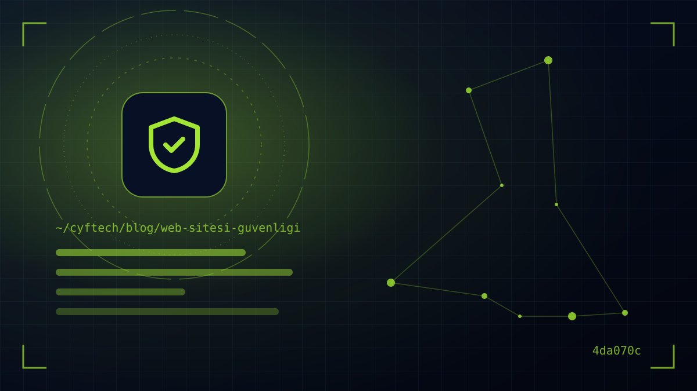

«Мы маленькая компания, кому нужен наш сайт?» Эту фразу мы слышим часто. Однако большинство атак проводится автоматическими инструментами, которые нацелены не на конкретную компанию, а на любой сайт с уязвимостью. Безопасность сайта касается всех, независимо от размера.
В этом руководстве мы рассказываем, почему сайт становится мишенью, зачем нужен SSL-сертификат и как вас затронет сокращение сроков действия сертификатов с 2026 года, о базовых мерах — обновлениях, доступе, резервном копировании и файрволе, — о рисках OWASP Top 10, которые нужно учитывать при разработке ПО, и о том, что делать, если атака всё же произошла.
Цель — не сделать из вас специалиста по безопасности, а помочь задавать правильные вопросы агентству, хостинг-провайдеру или команде разработчиков и избежать самых частых ошибок.
Почему атакуют даже небольшие сайты?
Для злоумышленников ценен не только сам сайт, но и его ресурсы. Взломанный сайт можно использовать для:
- Спама и фишинга: с вашего сервера рассылаются тысячи поддельных писем, а ваш домен попадает в чёрные списки.
- SEO-спама: на сайт добавляются скрытые страницы и ссылки; Google может пометить сайт как «взломанный».
- Кражи данных: похищаются данные из форм обратной связи, сведения о пользователях и заказах; по KVKK это означает утечку данных.
- Вымогательства и вредоносного ПО: файлы шифруются, или посетителям распространяется вредоносное ПО.
Есть и невидимые затраты: очистка взломанного сайта, восстановление доверия, возврат позиций в поиске и объяснения клиентам чаще всего обходятся гораздо дороже профилактики. К тому же, когда ваш почтовый домен попадает в чёрный список, даже обычные письма с предложениями и счетами перестают доходить до клиентов.
Большинство таких атак ищет известные уязвимости, исправления для которых давно выпущены. То есть безопасность обеспечивается в основном не сложными технологиями, а регулярной поддержкой и дисциплиной.
Злоумышленник не выбирает вас — он находит сайт с открытой дверью.
Что такое SSL-сертификат и какой тип выбрать?
SSL-сертификат (сегодня технически — TLS) шифрует трафик между браузером посетителя и вашим сервером и обеспечивает https и значок замка в адресной строке. Номер телефона или пароль, отправленный через форму без SSL, может прочитать кто-то в сети. Браузеры помечают страницы без SSL как «не защищённые», а Google считает HTTPS частью оценки удобства страниц.
| Тип | Что подтверждает? | Для кого? |
|---|---|---|
| DV (проверка домена) | Только то, что домен находится под вашим контролем | Корпоративные сайты, блоги; бесплатные варианты вроде Let’s Encrypt относятся к этому типу |
| OV (проверка организации) | Помимо домена — существование компании | Компании, которые хотят показывать свою корпоративную идентичность в сертификате |
| EV (расширенная проверка) | Всесторонняя проверка компании | Некоторые финансовые и корпоративные структуры; браузеры больше не показывают отдельную зелёную строку |
По стойкости шифрования между тремя типами разницы нет. Разница — в проверке личности, стоящей за сертификатом. Для большинства сайтов малого и среднего бизнеса и интернет-магазинов достаточно правильно настроенного DV-сертификата с автоматическим продлением.
В 2026 году сроки действия SSL-сертификатов сокращаются: что делать?
CA/Browser Forum, объединяющий производителей браузеров и удостоверяющие центры, в апреле 2025 года принял решение SC-081 о поэтапном сокращении максимального срока действия публичных SSL/TLS-сертификатов:
| Дата | Максимальный срок сертификата |
|---|---|
| С 15 марта 2026 года | 200 дней |
| С 15 марта 2027 года | 100 дней |
| С 15 марта 2029 года | 47 дней |
На практике это означает конец эпохи «раз в год купить сертификат и установить вручную». Период в 200 дней уже действует; к 2029 году сертификаты придётся продлевать семь-восемь раз в год.
- Переходите на автоматическое продление: используйте провайдера с поддержкой протокола ACME (например, Let’s Encrypt) или функцию автоматического SSL в панели хостинга.
- Отслеживайте сертификаты: установите инструмент мониторинга, предупреждающий об истекающих сертификатах.
- Составьте список сертификатов, установленных вручную: если используете платные OV/EV-сертификаты, уже сейчас спросите провайдера о вариантах автоматизации.
- Включите HSTS: заголовок HSTS, предписывающий браузеру всегда подключаться к сайту по HTTPS, блокирует атаки с понижением до незашифрованного соединения.
5 базовых мер безопасности сайта
Технически самые простые меры останавливают больше всего атак:
- 1. Актуальное ПО — CMS, тема, плагины, серверное ПО и используемые библиотеки должны регулярно обновляться. Отключить неиспользуемые плагины недостаточно — удалите их полностью.
- 2. Надёжный доступ — используйте уникальные длинные пароли для админ-панели, панели хостинга, FTP и базы данных, менеджер паролей и везде, где возможно, двухфакторную аутентификацию (2FA).
- 3. Минимальные права — давайте каждому пользователю только необходимые права. Сразу закрывайте аккаунты уволившихся сотрудников и агентств, завершивших проект.
- 4. Регулярные резервные копии — следуйте правилу 3-2-1: минимум три копии, два разных носителя, одна копия вне сервера. Несколько раз в год проверяйте, что копию можно восстановить.
- 5. Мониторинг — получайте уведомления о доступности сайта, изменениях файлов и неудачных попытках входа. Регулярно проверяйте отчёт «Проблемы безопасности» в Google Search Console.
Файрвол (WAF), защита от DDoS и заголовки безопасности
Второй слой поверх базовых мер — остановить вредоносный трафик до того, как он достигнет сайта.
- Файрвол веб-приложений (WAF): фильтрует SQL-инъекции, перебор паролей и известные шаблоны атак. Большинство CDN-сервисов предлагает его в базовых пакетах.
- Защита от DDoS: защита на уровне CDN или хостинга от попыток обрушить сайт потоком запросов особенно важна в периоды акций.
- Ограничение входа и CAPTCHA: ограничение числа попыток в админ-панели и формах усложняет жизнь ботам.
- Заголовки безопасности: HTTP-заголовки вроде Content-Security-Policy, X-Frame-Options (или CSP frame-ancestors), X-Content-Type-Options и Referrer-Policy сообщают браузеру, каким ресурсам доверять, и заранее блокируют многие типы атак.
CDN и кеширование заодно ускоряют сайт; здесь безопасность и производительность улучшаются одной инвестицией. О скорости мы рассказали скорость сайта и Core Web Vitals в отдельной статье.
Безопасность заказного ПО: OWASP Top 10:2025
Если на сайте есть разработанные на заказ разделы — регистрация, оплата, бронирование или личный кабинет, — безопасность во многом зависит от того, как написан код. Мировой ориентир в этой области — OWASP Top 10, список самых критичных рисков веб-приложений от OWASP. В версии 2025 года, впервые обновлённой с 2021-го, выделяются следующие пункты:
- Нарушение контроля доступа: ошибки вроде возможности увидеть чужой счёт, изменив номер в адресной строке. По-прежнему на первом месте.
- Ошибки конфигурации безопасности: открытые админ-экраны, пароли по умолчанию, подробные сообщения об ошибках. В списке 2025 года поднялись на второе место.
- Сбои в цепочке поставок ПО: новая категория; охватывает безопасность сторонних пакетов, плагинов и инструментов сборки, используемых в проекте.
- Криптографические ошибки и инъекции: хранение паролей открытым текстом или вставка пользовательского ввода в запрос к базе без проверки.
- Неправильная обработка исключительных ситуаций: тоже новая категория; описывает переход системы в небезопасное состояние при сбое.
Работая с командой разработчиков, используйте этот список как инструмент проверки: спрашивайте, какая мера принята против какого риска. Для критичных проектов хорошая практика — независимый тест на проникновение (пентест) перед запуском. Именно поэтому в наших продуктах KATSİS и RestaurantBill, обрабатывающих платежи и персональные данные, ролевая авторизация, зашифрованные соединения и ведение журналов (логов) заложены с первого дня проектирования. Подробнее об этих продуктах — на странице наши проекты.
Что делать, если сайт взломали?
Даже при лучших мерах инцидент может случиться. Действия в панике часто стирают следы и усугубляют проблему. Действуйте спокойно и по порядку:
- Шаг 1 — переведите сайт в режим обслуживания или временно закройте доступ, чтобы не пострадали посетители.
- Шаг 2 — смените все пароли (панель, хостинг, FTP, база данных, почта) и завершите все сеансы.
- Шаг 3 — изучите серверные журналы и изменённые файлы, чтобы найти источник атаки; восстановление из копии без закрытия уязвимости приведёт к повторной атаке.
- Шаг 4 — восстановитесь из чистой резервной копии, обновите всё ПО и запросите проверку в Search Console.
- Шаг 5 — если затронуты персональные данные, оцените ситуацию с юридической точки зрения. KVKK обязывает операторов данных уведомить Совет по защите персональных данных как можно скорее после обнаружения утечки — согласно решению Совета, не позднее 72 часов, — а затронутых лиц — в разумный срок.
Национальный центр реагирования на киберинциденты Турции (USOM) публикует предупреждения о киберугрозах и принимает сообщения об инцидентах. Следить за касающимися вашей организации объявлениями — полезная привычка.
- Все ли страницы открываются по HTTPS, продлевается ли SSL автоматически?
- Актуальны ли CMS, тема и плагины?
- Включена ли двухфакторная аутентификация в админ-панели?
- Закрыты ли старые аккаунты пользователей и агентств?
- Хранятся ли резервные копии вне сервера и проверено ли восстановление?
- Включены ли WAF/CDN и заголовки безопасности?
- Прописано ли, кто и что делает в случае утечки?
Частые вопросы
Делает ли SSL-сертификат сайт полностью безопасным?
Нет. SSL шифрует трафик между посетителем и сервером, но не закрывает уязвимости ПО, слабые пароли или необновлённые плагины. Помимо SSL для безопасности нужны регулярные обновления, строгий контроль доступа и резервное копирование.
Достаточно ли бесплатного SSL-сертификата?
Для большинства корпоративных сайтов и интернет-магазинов — да. Бесплатные DV-сертификаты вроде Let’s Encrypt обеспечивают ту же стойкость шифрования, что и платные. Платные OV и EV добавляют проверку организации, но соединение безопаснее не делают.
Сколько действует SSL-сертификат?
По решению CA/Browser Forum с 15 марта 2026 года максимальный срок действия новых сертификатов — 200 дней. 15 марта 2027 года он сократится до 100 дней, а 15 марта 2029 года — до 47 дней. Поэтому автоматическое продление становится обязательным.
Как понять, что сайт взломали?
Самые распространённые признаки: незнакомые страницы или ссылки на сайте, заголовки на иностранном языке в результатах Google, перенаправление посетителей на другие сайты, предупреждение о безопасности в Search Console и уведомления о спаме от хостинг-провайдера.
Как часто нужно обновлять сайт для безопасности?
Обновления безопасности нужно устанавливать как можно скорее после выхода. Общее правило — проверяйте сайт хотя бы раз в месяц, а критические патчи безопасности ставьте без промедления. Не забывайте делать резервную копию перед обновлением.
В заключение
Безопасность сайта — не разовая настройка, а постоянная привычка: SSL с автопродлением, актуальное ПО, двухфакторная аутентификация, резервные копии вне сервера и файрвол. Эти базовые слои останавливают большую часть автоматических атак ещё на пороге.
В CYF Tech мы разрабатываем сайты и заказные веб-приложения с учётом безопасности с самого начала, а после запуска обеспечиваем поддержку и обновления. Если хотите вместе проверить безопасность текущего сайта, напишите нам.
- OWASP Top 10:2025
- DigiCert — TLS/SSL certificate validity changes
- CA/Browser Forum — Ballot SC-081v3
- Let’s Encrypt — How it works
- Google Search Central — Secure your site with HTTPS
- Google Search Central — Hacked sites
- KVKK — уведомление об утечках персональных данных
- USOM — Национальный центр реагирования на киберинциденты Турции